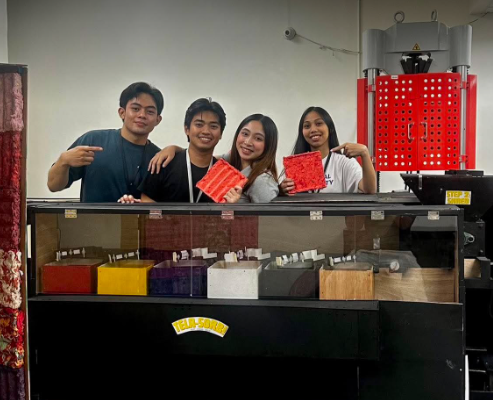

Undergraduate Thesis · 4-Member Team
TELA-SORB: Semi-Automated Machine for Sound-Absorbing Panel Production Using Textile Waste
Overview
Tela-Sorb is a semi-automated machine that turns textile waste into sound-absorbing acoustic panels. It combines load-cell weighing, computer vision-based color sorting, and compression molding in one automated pipeline, providing an affordable and eco-friendly alternative to commercial acoustic materials.
Quantifiable Results
- 90–100% color-sorting accuracy across 150 test trials
- Detection model achieved 0.995 mAP@0.5 and a 0.98 F1 score
- Produces a uniform 7×7-inch acoustic panel from 160g of textile scraps
My Contribution
I programmed the core logic that connects the Arduino Nano, ESP32, and Raspberry Pi 5, coordinating the computer vision, weighing, and actuator subsystems in real time. I also developed the Python and C++ software for YOLO-based color detection.
The Problem
Tela-Sorb addresses two related problems: rising noise pollution in homes, small offices, and shared living spaces, and the growing volume of textile waste from the fashion industry. Much of that waste ends up in landfills, where it takes years to biodegrade and can release harmful compounds. Acoustic foam and fiberglass insulation can be too expensive or impractical for renters and people in small spaces, and few alternatives focus on sustainability. Tela-Sorb turns discarded fabric into an affordable, eco-friendly sound-absorption product.
Who It’s For
Tela-Sorb is intended for homeowners and renters who need affordable noise reduction, students and remote workers who want a quieter place to focus, and content creators or home-studio owners who want to reduce echo and background noise. It does not require professional installation.
Additional Testing Highlights
- During continuous operation tests, the shredder completed repeated feed cycles with only occasional clogs that were easy to clear.
- Compression tests produced consistent panel thickness and durable adhesive bonding over a one-month observation period.
- Final panels measure 7×7 inches at 25mm thickness, sized for integration into a small-scale 3×3×5 ft cubicle structure used for acoustic testing.
Scope & Limitations
The system cannot process textiles containing metallic components, including zippers, buttons, and hooks, which must be manually removed beforehand. Color sorting accuracy can be affected by inconsistent lighting conditions, and the shredder’s capacity limits processing to small fabric scraps rather than large textile pieces. Output panels may retain minor traces of other colors due to residual material in the shredding mechanism. The system is intended for small to medium-sized spaces, not industrial-scale acoustic treatment.